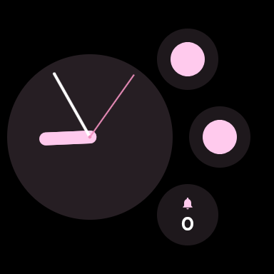

Prospective memory works better when the reminder lives where you actually look
Prospective memory is the ability to remember to do something in the future: call HR after a meeting, get back to Lena before the day ends, or check the salary report before payroll closes. It fails most often not because the task is hard, but because the cue arrives at the wrong moment.
Prospective memory is different from remembering facts or recalling a past event. It is remembering to act later. In daily life, many of these tasks are small, repeated, and easy to lose: did I already take my medication, do I still need to send that message, did I lock the car, did I finish today's habit?
These tasks are vulnerable because they compete with whatever currently has your attention. If the cue is weak, delayed, or buried in a long notification list, the intention can disappear.
Fleeting notification
Easy to dismiss, easy to miss, and often gone before the action moment arrives.
Persistent wrist cue
Still visible when you glance at the watch during the workday, commute, or errand.
Point of action
Useful when the reminder shows up close to where the task is actually completed.
How to use it well
Choose binary tasks
Tasks with a clear yes or no state work best because the watch cue stays unambiguous.
Label the exact action
Call HR or Check salary report works better than a vague tag like Admin.
Keep it where you look
The point is not complexity. The point is a clear state you notice in half a second.
Use reset rules sparingly
Auto-reset helps for daily routines, but the tap to clear should always stay simpler than the memory task itself.
A practical example
After the meeting
Suppose you finish a meeting and need to remember to call HR before the office closes. A normal notification is easy to swipe away and then forget. A paper note works, but it is not always with you. A watch complication is different: each wrist glance gives you the state again. If it still says ON, the task is pending. When you finish the call, one tap clears it.
The integrated solution
That is the idea behind Toggle Reminder, a Wear OS reminder app built around complications, tiles, multiple independent toggles, and optional auto-reset scheduling for everyday task reminders and prospective memory support.
In practice, the app works by keeping a small, persistent state on the watch face instead of relying on a notification that disappears. That makes it useful for work reminders like calling HR, checking the salary report, or getting back to Lena because the cue stays visible until you explicitly clear it.
The real app screenshots below show the same idea in the final product: simple binary states, fast recognition, and a reminder that stays available where a quick wrist glance already happens.

